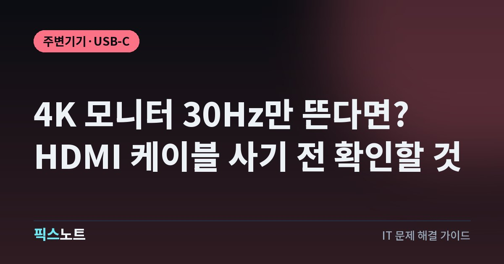

4K 모니터 30Hz만 뜬다면? HDMI 케이블 사기 전 확인할 것
4K 모니터가 30Hz로만 작동할 때 Windows 설정과 HDMI 단자·케이블·허브 지원 범위를 확인해요.

4K 모니터를 샀는데 화면 움직임이 유난히 끊기고 주사율 선택에는 30Hz만 보일 수 있어요. 이런 상황에서 비싼 HDMI 케이블부터 사도 컴퓨터 출력 단자나 허브가 제한하면 달라지지 않아요. 현재 연결 경로가 4K 60Hz를 지원하는지 하나씩 확인하면 불필요한 지출을 줄일 수 있어요.
모니터가 실제로 몇 Hz로 작동하는지 봐요
Windows가 해상도 3840×2160을 출력하고 있어도 주사율은 30Hz일 수 있어요. 4K라는 글자는 픽셀 수를, 30Hz와 60Hz는 1초 동안 화면이 갱신되는 횟수를 가리키기 때문에 서로 별개예요. 화면이 끊기는 것처럼 느껴지면 현재 값부터 확인해요. Microsoft는 Windows 11의 고급 디스플레이 화면에서 현재 해상도와 주사율을 확인하고 장치가 지원하는 항목으로 변경할 수 있다고 안내해요. 여기서 60Hz를 선택할 수 있다면 먼저 적용하고 정상 표시되는지 확인하세요. 목록에 60Hz 자체가 없다면 설정을 반복하기보다 연결 경로의 사양을 살펴야 해요.
Windows 고급 디스플레이에서 60Hz를 찾아요
모니터가 두 대 이상이라면 설정 중인 디스플레이가 실제 4K 외장 모니터인지 먼저 확인해야 해요. 노트북 내장 화면의 주사율을 바꿔도 외장 모니터가 30Hz로 남을 수 있어요. Windows 고급 디스플레이의 주사율 목록에는 시스템이 현재 연결에서 사용할 수 있다고 판단한 값이 표시돼요. 60Hz가 있으면 바꾼 뒤 화면이 정상적인지 살펴보고 없다면 더 높은 값을 강제로 추가하지 마세요. 디스플레이 해상도도 모니터 권장값으로 설정한 뒤 확인하는 것이 좋아요.
- 시작 > 설정 > 시스템 > 디스플레이를 열어요.
- 외장 4K 모니터를 선택한 뒤 고급 디스플레이를 열어요.
- 새로 고침 빈도 선택에 60Hz가 있으면 적용하고 화면을 확인해요.
출력 포트와 모니터 입력 사양을 대조해요
4K 60Hz를 쓰려면 그래픽 장치뿐 아니라 실제 사용 중인 출력 단자와 모니터 입력 단자도 해당 모드를 지원해야 해요. Intel 공식 지원 문서에는 그래픽 제품의 HDMI·DisplayPort별 최대 해상도를 확인하고 PC 제조사와 변환기 제조사 사양도 살펴보라고 나와 있어요. 한 노트북에 HDMI와 USB-C가 함께 있어도 두 포트가 같은 영상 출력 규격을 제공한다고 가정해서는 안 돼요. 모니터도 HDMI 입력마다 지원 범위가 다를 수 있으니 제품 설명서에서 사용 중인 입력 단자를 확인해요. PC와 모니터 중 한쪽이 4K 30Hz까지만 지원하면 케이블만 바꿔도 그 제한은 사라지지 않아요.
케이블은 가격보다 공식 인증을 확인해요
HDMI Licensing Administrator는 Premium High Speed HDMI 케이블의 인증 시험에 18Gbps 대역폭과 4K 60Hz 등 기능이 포함된다고 설명해요. 4K 60Hz 용도로 케이블을 고를 때는 광고에 적힌 '최고급' 같은 표현보다 공식 규격과 인증 표시를 확인하는 편이 좋아요. 인증 제품이라면 케이블 포장의 확인 라벨이나 QR 코드를 검사할 수도 있어요. 그렇다고 기존에 쓰는 케이블이 반드시 불량하다는 뜻은 아니에요. 컴퓨터와 모니터의 입출력이 지원되고 다른 케이블로 바꿨을 때에만 증상이 사라진다면 케이블을 원인 후보로 좁힐 수 있어요. 4K 120Hz까지 필요하다면 요구하는 규격을 별도로 확인해야 해요.
허브나 변환기를 빼고 직접 연결해 보세요
USB-C 허브, 도킹 스테이션, HDMI 전환기, HDMI와 DisplayPort를 잇는 변환 어댑터가 사이에 있으면 그 부품도 가능한 해상도와 주사율에 영향을 줄 수 있어요. Intel은 4K 60Hz 문제가 있을 때 변환기를 거치지 않은 직접 HDMI 연결과 다른 케이블을 시험하도록 안내해요. 노트북이나 그래픽카드의 단자와 모니터를 바로 연결했을 때 60Hz가 나타나는지 비교해 보세요. 직접 연결에서는 정상인데 허브를 거치면 30Hz로 제한된다면 해당 허브의 사양에서 '4K@60Hz' 지원 여부와 연결 조건을 확인해야 해요.
- 허브와 영상 변환기를 모두 분리해요.
- PC의 영상 출력 단자와 모니터를 직접 연결해요.
- Windows 고급 디스플레이에 60Hz가 나타나는지 다시 확인해요.
복제 화면과 그래픽 드라이버도 확인해요
노트북 화면과 외장 모니터를 같은 내용으로 보여 주는 복제 모드에서는 두 화면이 함께 지원하는 모드에 맞춰 제한될 수 있어요. Intel의 공식 문제 해결 안내도 복제 모드라면 확장 모드로 바꿔 비교하라고 설명해요. Windows + P를 눌러 '확장'을 선택한 뒤 외장 모니터의 주사율 목록을 확인하세요. 이전에는 60Hz가 됐는데 어느 날부터 안 된다면 그래픽 드라이버 업데이트 상태도 살펴볼 필요가 있어요. Microsoft와 Intel은 Windows 업데이트나 제조사가 제공하는 드라이버를 확인하도록 안내해요. BIOS 업데이트는 기기별 절차가 있으니 첫 조치로 삼지 말고 제조사 지원 안내를 확인해요.
HDR과 색상 설정은 지원 범위 안에서 조정해요
4K 화면에서 HDR이나 높은 색심도를 함께 쓰면 연결 대역폭 요구량이 커질 수 있어요. Intel의 공식 자료에는 일부 HDMI 2.0 그래픽 환경에서 4K 60Hz의 RGB 8비트와 더 높은 색심도 모드의 지원 범위가 달라지는 사례가 제시돼 있어요. 그렇다고 모든 4K 30Hz 문제가 색상 설정 때문이라는 뜻은 아니에요. 케이블·입출력·허브 사양을 확인한 다음 그래픽 장치와 모니터가 지원하는 조합에서 HDR 설정을 바꿔 비교해야 해요. 화면이 검게 변하거나 색이 깨지면 이전 설정으로 돌아가세요. 4K 60Hz를 표시할 수 없는 포트라면 HDR을 끄는 것만으로 새로운 영상 대역폭이 생기지는 않아요.
새 부품 구매나 수리 전에 모델명을 모아두세요
무엇을 교체해야 할지 모르겠다면 PC 모델명과 그래픽 장치, 사용하는 영상 출력 포트, 모니터 모델과 HDMI 입력 번호, 케이블 제품명, 중간 허브 모델명을 한곳에 적어 보세요. 각 제조사 사양에서 해당 연결로 지원하는 최대 해상도와 주사율을 대조하면 제한 원인을 판단하기 쉬워져요. 다른 포트나 직접 연결에서 60Hz가 된다면 그 차이도 메모해요. HDMI 케이블에 높은 숫자가 적혀 있다고 그래픽 장치의 출력을 높일 수 있는 것은 아니에요. 원하는 모드가 공식 사양상 지원되는데도 목록에 없다면 Windows 버전과 드라이버 버전, 현재 연결 상태를 준비해 제조사에 문의하세요.
자주 묻는 질문
4K 모니터가 30Hz로만 나오면 HDMI 2.1 케이블을 사야 하나요?
먼저 컴퓨터 출력 포트와 모니터 입력 포트, 허브의 4K 60Hz 지원을 확인해요. 4K 60Hz 용도로 인증된 Premium High Speed HDMI 케이블도 있으므로 새 케이블이 필요하더라도 무조건 더 높은 규격을 살 이유는 없어요.
4K 60Hz가 Windows 주사율 목록에 아예 없으면 어떻게 해요?
고급 디스플레이에서 실제 모니터를 선택했는지 확인하고 허브를 제거해 직접 연결해 보세요. PC와 모니터의 포트별 지원 범위가 맞는지 확인한 뒤 그래픽 드라이버와 복제 화면 설정을 점검하면 좋아요.
4K 30Hz는 되고 60Hz는 안 되는데 모니터 고장인가요?
고장으로 단정하기 어려워요. 영상 출력 포트, 케이블, 중간 변환기, 화면 복제 설정 중 하나가 제한일 수 있어요. 다른 입력 포트와 직접 연결을 비교한 결과를 갖고 제조사 지원에 문의하는 편이 정확해요.
HDMI로 4K 60Hz가 안 되면 DisplayPort로 바꾸면 되나요?
기기들이 DisplayPort에서 4K 60Hz 출력을 지원한다면 가능한 대안이에요. 다만 HDMI와 DisplayPort는 PC와 모니터의 실제 포트 사양에 따라 지원 모드가 다르므로 제품 설명서의 최대 해상도와 주사율을 먼저 대조해야 해요.